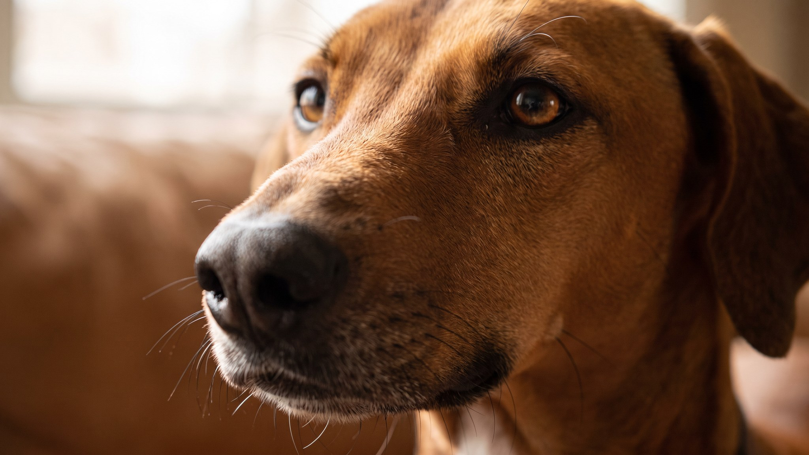

Азавак смотрит на незнакомца и просто уходит. Не лает, не бросается. Эта собака тысячелетиями охраняла стада туарегов в Сахаре и привязывалась к одному-двум людям, остальных игнорируя. Если вы хотите собаку, которая тянется к каждому прохожему, азавак не ваш выбор. Если ищете собаку с настоящим характером, читайте дальше.
🐾 У вас азавак?
AnimaLife соберёт уход под породу: к каким болезням есть склонность, что проверять по возрасту, чем кормить и когда пора к врачу. Бесплатно, прямо в мессенджере.
Собрать план ухода → Собрать в MAX →
У вас iPhone? AnimaLife есть в App Store
Азавак держится с достоинством, которое многие путают с холодностью. С хозяином он мягкий и внимательный: ходит за ним по пятам, кладёт голову на колени и явно страдает, когда хозяин уходит. С чужими людьми и другими собаками поведение другое: оценивает, держится на дистанции, не проявляет инициативы к контакту.
Эта порода плохо переносит грубость. Сила голоса или рывок поводка не дают результата: собака закрывается. Доверие строится терпением и последовательностью. Если азавак вас принял, он будет рядом всю жизнь.
Одиночество переносится тяжело. Оставлять азавака одного на весь рабочий день без подготовки плохая идея. Порода подходит людям, которые дома большую часть дня или могут взять собаку с собой.
Азавак создан для бега. Он развивает скорость до 65–70 км/ч и был выведен для преследования газелей на открытых пространствах. Охотничий инстинкт у него рефлекторный: увидел кошку или белку, рванул, и всё остальное в этот момент перестаёт существовать.
Гулять азавака нужно на поводке или в огороженном пространстве. Площадка с надёжным забором даёт лучшие условия для свободного бега. Команда «ко мне» при виде движущейся добычи не срабатывает у большинства борзых, и азавак не исключение.
Нагрузка нужна ежедневная. Без хорошей физической активности собака становится беспокойной, начинает искать выход энергии дома.
Шерсть у азавака короткая и очень плотно прилегающая, подшёрстка нет. Уход минимальный: протереть влажной тканью раз в неделю, проверить уши и когти.
Зато с холодом серьёзнее. Азавак мёрзнет уже при +10 °C, а при минусовой температуре выходить без одежды нельзя. Сейчас ноябрь, и большинству владельцев этой породы в России пора достать зимний комбинезон. Нужен теплозащитный комбинезон для прогулок по снегу и утеплённая жилетка для сырой погоды. Собака мёрзнет незаметно: начинает дрожать уже через несколько минут на улице.
Дома азавак выбирает тёплые места. Лежанка должна быть вдали от сквозняков и желательно на плотном мате с подогревом.
Азавак подходит вам, если:
Азавак не подходит, если вы живёте в маленькой квартире без возможности выезжать за город, если в семье маленькие дети, которые тянутся к собаке, или если вам нужна компанейская игривая порода.
Порода редкая, щенков мало. Перед покупкой стоит пообщаться с заводчиком и, если возможно, провести час-другой рядом со взрослой собакой этой породы. Обратитесь к ветеринару за советом по здоровью породы до приобретения щенка.
Материал носит информационный характер и не заменяет очную консультацию ветеринара.
🐾 Ваш питомец — азавак?
Заведите профиль в AnimaLife: приложение запомнит породу, возраст и вес и будет подсказывать по уходу именно для неё. Вопросы AI-ветеринару — круглосуточно и бесплатно.
Завести профиль → Завести в MAX →
У вас iPhone? AnimaLife есть в App Store
🐾 Понравился разбор?
Подпишитесь на канал — каждый день разбираем по одному тревожному симптому у кошек и собак: что в пределах нормы, а когда пора к врачу. Подпишитесь, чтобы не пропустить разбор, который может спасти здоровье вашего питомца.